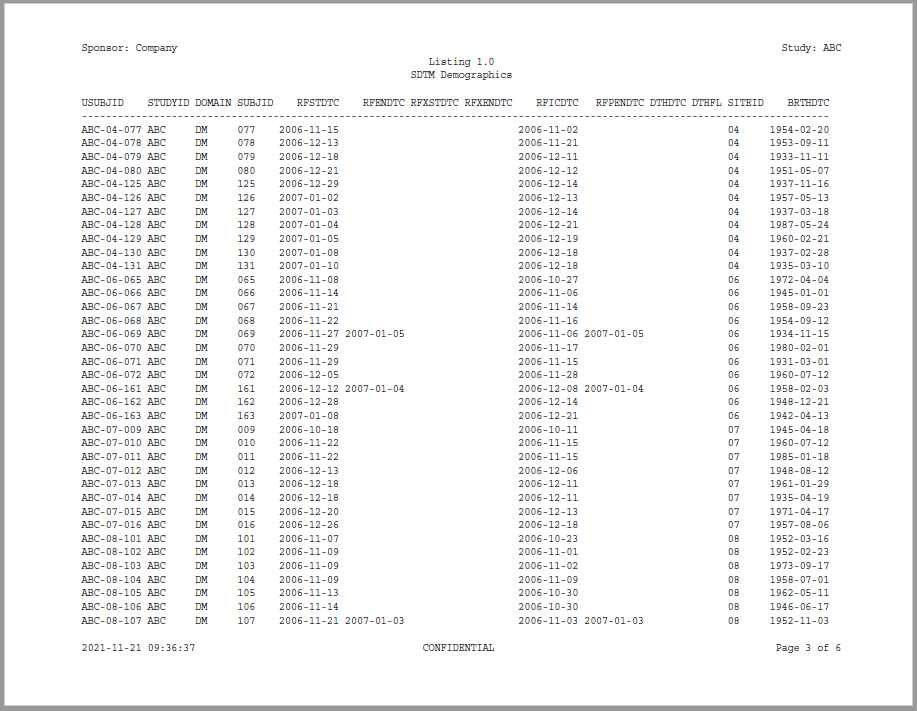
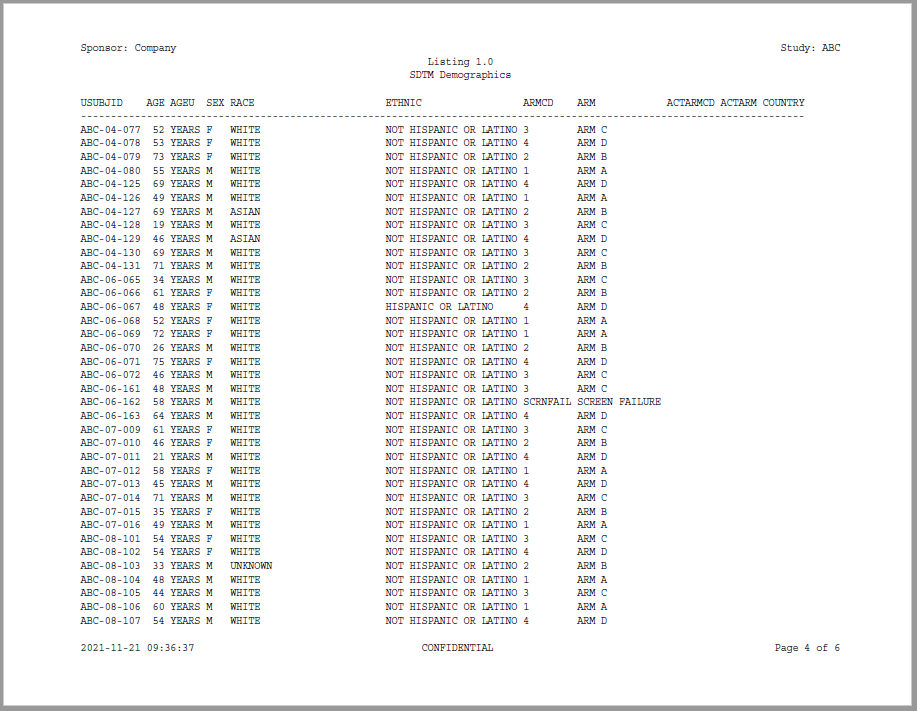
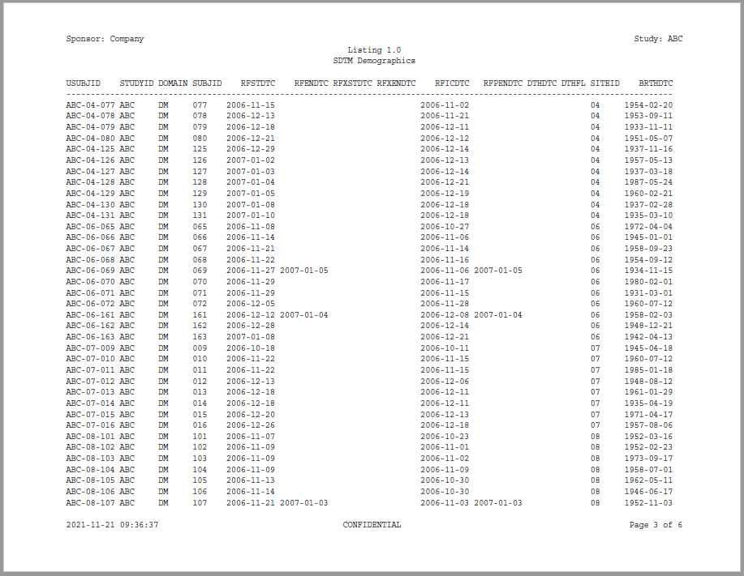
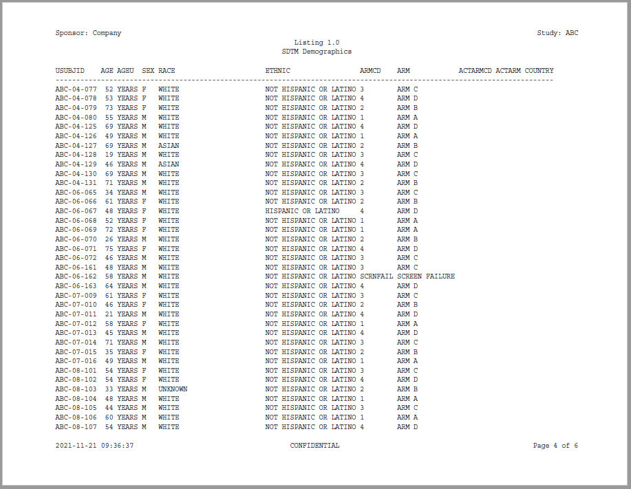

Program
The previous examples in the reporter documentation were intentionally simplified to focus on the workings of a particular function. It is helpful, however, to also view reporter functions in the context of a complete program. The following example shows a complete program. The example illustrates how reporter functions work together, and interact with sassy functions to create a listing.
The data for this example has been included in the reporter package as an external data file. It may be accessed using the system.file() function as shown below, or downloaded directly from the reporter GitHub site here
library(sassy)
library(magrittr)
options("logr.autolog" = TRUE,
"logr.notes" = FALSE)
# Get temp location for log and report output
tmp <- tempdir()
# Open log
lf <- log_open(file.path(tmp, "example1.log"))
# Get Data ----------------------------------------------------------------
sep("Get Data")
# Get path to sample data
pkg <- system.file("extdata", package = "reporter")
# Define data library
libname(sdtm, pkg, "csv")
# Load library into workspace
lib_load(sdtm)
# Write Report ------------------------------------------------------------
sep("Write Report")
# Define table object
tbl <- create_table(sdtm.DM) %>%
define(USUBJID, id_var = TRUE)
# Define report object
rpt <- create_report(file.path(tmp, "output/example1.pdf"), output_type = "PDF") %>%
page_header("Sponsor: Company", "Study: ABC") %>%
titles("Listing 1.0", "SDTM Demographics") %>%
add_content(tbl, align = "left") %>%
page_footer(Sys.time(), "CONFIDENTIAL", "Page [pg] of [tpg]")
# Write report to file system
res <- write_report(rpt)
# Clean Up ----------------------------------------------------------------
sep("Clean Up")
# Unload data
lib_unload(sdtm)
# Close log
log_close()
# View log
writeLines(readLines(lf, encoding = "UTF-8"))
# View report
# file.show(res$modified_path)Log
The above program produces the following log:
=========================================================================
Log Path: C:/Users/dbosa/AppData/Local/Temp/RtmpgrpGQ1/log/example1.log
Program Path: C:\packages\Testing\reporter_example1.R
Working Directory: C:/packages/Testing
User Name: dbosa
R Version: 4.1.2 (2021-11-01)
Machine: SOCRATES x86-64
Operating System: Windows 10 x64 build 19041
Base Packages: stats graphics grDevices utils datasets methods base
Other Packages: tidylog_1.0.2 magrittr_2.0.1 reporter_1.2.6 libr_1.2.1 fmtr_1.5.4
logr_1.2.7 sassy_1.0.5
Log Start Time: 2021-11-21 09:36:31
=========================================================================
=========================================================================
Get Data
=========================================================================
# library 'sdtm': 1 items
- attributes: csv not loaded
- path: C:/Users/dbosa/Documents/R/win-library/4.1/logr/extdata
- items:
Name Extension Rows Cols Size
1 DM csv 87 24 45.4 Kb
LastModified
1 2021-11-16 10:34:25
lib_load: library 'sdtm' loaded
=========================================================================
Write Report
=========================================================================
# A report specification: 6 pages
- file_path: 'C:\Users\dbosa\AppData\Local\Temp\RtmpgrpGQ1/output/example1.pdf'
- output_type: PDF
- units: inches
- orientation: landscape
- margins: top 0.5 bottom 0.5 left 1 right 1
- line size/count: 127/45
- page_header: left=Sponsor: Company right=Study: ABC
- title 1: 'Listing 1.0'
- title 2: 'SDTM Demographics'
- page_footer: left=2021-11-21 09:36:37 center=CONFIDENTIAL right=Page [pg] of [tpg]
- content:
# A table specification:
- data: tibble 'sdtm.DM' 87 rows 24 cols
- show_cols: all
- use_attributes: all
- define: USUBJID id_var='TRUE'
=========================================================================
Clean Up
=========================================================================
lib_sync: synchronized data in library 'sdtm'
lib_unload: library 'sdtm' unloaded
=========================================================================
Log End Time: 2021-11-21 09:36:42
Log Elapsed Time: 0 00:00:10
========================================================================= 
